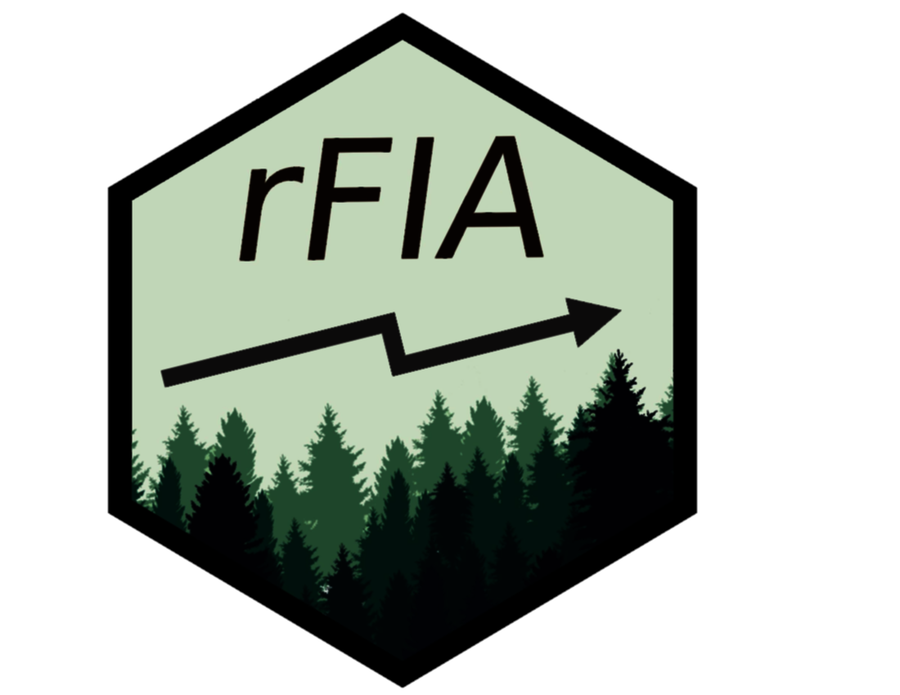
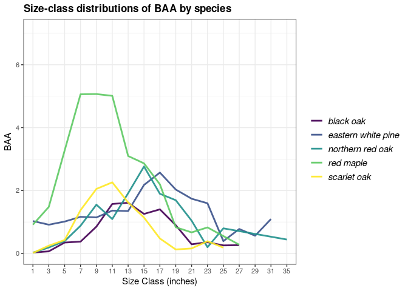
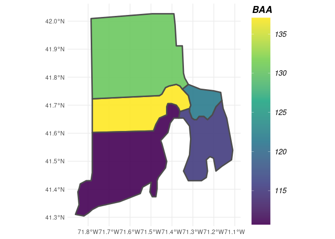

rFIA: Unlocking the FIA Database in R 

Overview
The goal of rFIA is to increase the accessibility and use of the USFS Forest Inventory and Analysis (FIA) Database by providing a user-friendly, open source platform to easily query and analyze FIA Data. Designed to accommodate a wide range of potential user objectives, rFIA simplifies the estimation of forest variables from the FIA Database and allows all R users (experts and newcomers alike) to unlock the flexibility and potential inherent to the Enhanced FIA design.
Specifically, rFIA improves accessibility to the spatio-temporal estimation capacity of the FIA Database by producing space-time indexed summaries of forest variables within user-defined population boundaries. Direct integration with other popular R packages (e.g., dplyr, sp, and sf) facilitates efficient space-time query and data summary, and supports common data representations and API design. The package implements design-based estimation procedures outlined by Bechtold & Patterson (2005), and has been validated against estimates and sampling errors produced by EVALIDator.
For more information and example usage of rFIA, check out the numerous vignettes and example use cases in the Articles page on our website. To report a bug or suggest additions to rFIA, please use our active issues page on GitHub, or contact Jeff Doser (maintainer).
To cite rFIA, please refer to the publication in Environmental Modeling and Software (doi: https://doi.org/10.1016/j.envsoft.2020.104664).
Functionality
rFIA Function |
Description |
|---|---|
area() |
Estimate land area in various classes |
areaChange() |
Estimate annual change in land area in various classes |
biomass() |
Estimate biomass and carbon stocks of standing trees |
carbon() |
Estimate carbon stocks by IPCC forest carbon pools |
customPSE() |
Estimate custom variables |
clipFIA() |
Spatial & temporal queries for FIA data |
diversity() |
Estimate diversity indices (e.g. species diversity) |
dwm() |
Estimate volume, biomass, and carbon stocks of down woody material |
fsi() |
Estimate forest stability index for live tree populations |
getDesignInfo() |
Summarize attributes of FIA’s post-stratified inventories |
getFIA() |
Download FIA data, load into R, and optionally save to disk |
growMort() |
Estimate recruitment, mortality, and harvest rates |
intersectFIA() |
Join attributes of a spatial polygon(s) to FIA’s PLOT table |
invasive() |
Estimate areal coverage of invasive species |
plotFIA() |
Produce static & animated plots of FIA summaries |
readFIA() |
Load FIA database into R environment from disk |
seedling() |
Estimate seedling abundance (TPA) |
standStruct() |
Estimate forest structural stage distributions |
tpa() |
Estimate abundance of standing trees (TPA & BAA) |
vitalRates() |
Estimate live tree growth rates |
volume() |
Estimate merchantable volume of standing trees |
writeFIA() |
Write in-memory FIA Database to disk |
Installation
You can install the released version of rFIA from CRAN with:
install.packages("rFIA")Currently, you can install the development version from GitHub:
devtools::install_github('doserjef/rFIA')Example Usage
Download FIA Data and Load into R
The first step to using rFIA is to download subsets of the FIA Database. The easiest way to accomplish this is using getFIA(). Using one line of code, you can download state subsets of the FIA Database, load data into your R environment, and optionally save those data to a local directory for future use!
# Download the state FIA data from Connecticut (requires an internet connection)
# All data acquired from FIA Datamart: https://apps.fs.usda.gov/fia/datamart/datamart.html
ct <- getFIA(states = 'CT', dir = '/path/to/save/data')By default, getFIA() only loads the portions of the database required to produce summaries with other rFIA functions (common = TRUE). This conserves memory on your machine and speeds download time. If you would like to download all available tables for a state, simple specify common = FALSE in the call to getFIA().
But what if I want to load multiple states worth of FIA data into R? No problem! Simply specify multiple state abbreviations in the states argument of getFIA() (e.g. states = c('MI', 'IN', 'WI', 'IL')), and all state subsets will be downloaded and merged into a single FIA.Database object. This will allow you to use other rFIA() functions to produce estimates within polygons which straddle state boundaries!
Note: given the massive size of the full FIA Database, users are cautioned to only download the subsets containing their region of interest.
If you have previously downloaded FIA data and would simply like to load the data into R from a local directory, use readFIA():
# Load FIA Data from a local directory
db <- readFIA('/path/to/your/directory/')Compute Estimates of Forest Variables
Now that you have loaded your FIA data into R, it’s time to put it to work. Let’s explore the basic functionality of rFIA with tpa(), a function to compute tree abundance estimates (trees per acre (TPA) and basal area per acre (BAA)) from FIA data, and fiaRI, a subset of the FIA Database for Rhode Island including inventories from 2013-2018.
Estimate the abundance of live trees in Rhode Island:
library(rFIA)
# Load the Rhode Island subset of the FIADB (included w/ rFIA)
# NOTE: This object can be produced using getFIA and/or readFIA
data("fiaRI")
# Only estimates for the most recent inventory year
fiaRI_MR <- clipFIA(fiaRI, mostRecent = TRUE)
tpaRI_MR <- tpa(fiaRI_MR)
head(tpaRI_MR)
#> # A tibble: 1 × 8
#> YEAR TPA BAA TPA_SE BAA_SE nPlots_TREE nPlots_AREA N
#> <dbl> <dbl> <dbl> <dbl> <dbl> <int> <int> <int>
#> 1 2018 427. 122. 6.63 3.06 126 127 199
# All Inventory Years Available (i.e., returns a time series)
tpaRI <- tpa(fiaRI)
head(tpaRI)
#> # A tibble: 6 × 8
#> YEAR TPA BAA TPA_SE BAA_SE nPlots_TREE nPlots_AREA N
#> <dbl> <dbl> <dbl> <dbl> <dbl> <int> <int> <int>
#> 1 2013 467. 119. 6.64 3.09 120 123 197
#> 2 2014 466. 120. 6.73 3.09 121 123 196
#> 3 2015 444. 121. 6.40 3.06 122 124 194
#> 4 2016 450. 123. 6.46 2.94 124 125 197
#> 5 2017 441. 123. 6.66 3.01 124 125 196
#> 6 2018 427. 122. 6.63 3.06 126 127 199What if I want to group estimates by species? How about by size class?
# Group estimates by species
tpaRI_species <- tpa(fiaRI_MR, bySpecies = TRUE)
head(tpaRI_species, n = 3)
#> # A tibble: 3 × 11
#> YEAR SPCD COMMON_NAME SCIENTIFIC_NAME TPA BAA TPA_SE BAA_SE
#> <dbl> <dbl> <chr> <chr> <dbl> <dbl> <dbl> <dbl>
#> 1 2018 12 balsam fir Abies balsamea 0.0873 0.0295 114. 114.
#> 2 2018 43 Atlantic white-cedar Chamaecyparis th… 0.247 0.180 59.1 56.0
#> 3 2018 68 eastern redcedar Juniperus virgin… 1.14 0.138 64.8 67.5
#> # ℹ 3 more variables: nPlots_TREE <int>, nPlots_AREA <int>, N <int>
# Group estimates by size class
# NOTE: Default 2-inch size classes, but you can make your own using makeClasses()
tpaRI_sizeClass <- tpa(fiaRI_MR, bySizeClass = TRUE)
head(tpaRI_sizeClass, n = 3)
#> # A tibble: 3 × 9
#> YEAR sizeClass TPA BAA TPA_SE BAA_SE nPlots_TREE nPlots_AREA N
#> <dbl> <dbl> <dbl> <dbl> <dbl> <dbl> <int> <int> <int>
#> 1 2018 1 188. 3.57 13.0 12.8 76 127 199
#> 2 2018 3 68.6 5.76 15.1 15.8 46 127 199
#> 3 2018 5 46.5 9.06 6.51 6.57 115 127 199
# Group by species and size class, and plot the distribution
# for the most recent inventory year
tpaRI_spsc <- tpa(fiaRI_MR, bySpecies = TRUE, bySizeClass = TRUE)
plotFIA(tpaRI_spsc, BAA, grp = COMMON_NAME, x = sizeClass,
plot.title = 'Size-class distributions of BAA by species',
x.lab = 'Size Class (inches)', text.size = .75,
n.max = 5) # Only want the top 5 species, try n.max = -5 for bottom 5
What if I want estimates for a specific type of tree (ex. greater than 12-inches DBH and in a canopy dominant or subdominant position) in a specific area (ex. growing on mesic sites), and I want to group my estimates by some variable other than species or size class (ex. ownership group)?
Easy! Each of these specifications are described in the FIA Database, and all rFIA functions can leverage these data to easily implement complex queries!
# grpBy specifies what to group estimates by (just like species and size class above)
# treeDomain describes the trees of interest, in terms of FIA variables
# areaDomain, just like above, describes the land area of interest
tpaRI_own <- tpa(fiaRI_MR,
grpBy = OWNGRPCD,
treeDomain = DIA > 12 & CCLCD %in% c(1,2),
areaDomain = PHYSCLCD %in% c(20:29))
head(tpaRI_own)
#> # A tibble: 2 × 9
#> YEAR OWNGRPCD TPA BAA TPA_SE BAA_SE nPlots_TREE nPlots_AREA N
#> <dbl> <int> <dbl> <dbl> <dbl> <dbl> <int> <int> <int>
#> 1 2018 30 0.857 3.61 58.9 59.1 3 37 199
#> 2 2018 40 1.48 3.97 25.7 27.7 12 83 199What if I want to produce estimates within my own population boundaries (within user-defined spatial zones/polygons)?
This is where things get really exciting.
# Load the county boundaries for Rhode Island. You can load your own spatial
# data using functions in sf
data('countiesRI')
# polys specifies the polygons (zones) where you are interested in producing estimates.
# returnSpatial = TRUE indicates that the resulting estimates will be joined with the
# polygons we specified, thus allowing us to visualize the estimates across space
tpaRI_counties <- tpa(fiaRI_MR, polys = countiesRI, returnSpatial = TRUE)
plotFIA(tpaRI_counties, BAA) # Plotting method for spatial FIA summaries, also try 'TPA' or 'TPA_PERC'
We produced a really cool time series earlier, how would I marry the spatial and temporal capacity of rFIA to produce estimates across user-defined polygons and through time?
Easy! Just hand tpa() the full FIA.Database object you produced with readFIA() (not the most recent subset produced with clipFIA()). For stunning space-time visualizations, hand the output of tpa() to plotFIA(). To save the animation as a .gif file, simpy specify fileName (name of output file) and savePath (directory to save file, combined with fileName).